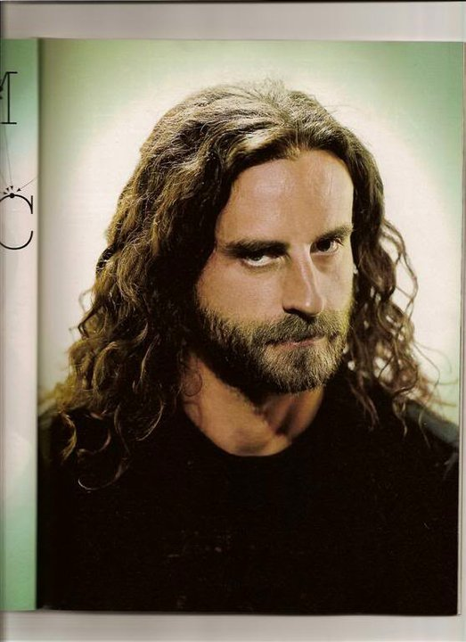

Adam Jones
Guitarist
Danny Carey
Drummer
Maynard James Keenan
Vocalist

Placeholder
Justin Chancellor
Bassist
| # | Studio Albums | Release Date | Playlist Link |
|---|---|---|---|
| 1 | Undertow | April 6, 1993 | Tool - Undertow (1993) [Full Album] |
| 2 | Ænima | September 17, 1996 | Tool - Ænima (1996) [Full Album] |
| 3 | Lateralus | May 15, 2001 | Tool - Lateralus (Full Album) (Deluxe Edition) |
| 4 | 10,000 days | May 2, 2006 | Tool - 10,000 Days (Full Album) (Deluxe Edition) |
| 5 | Fear Inoculum | August 30, 2019 | Tool - Fear Inoculum FULL ALBUM |
| # | Video Albums | Release Date | Playlist Link |
|---|---|---|---|
| 1 | Salival | December 12, 2000 | Tool Salival Full Album [HQ Audio] |
| 2 | Schism | December 20, 2005 | TOOL - Schism |
| 3 | Parabola | December 20, 2005 | TOOL - Parabola |
| 4 | Vicarious | December 18, 2007 | TOOL - Vicarious |